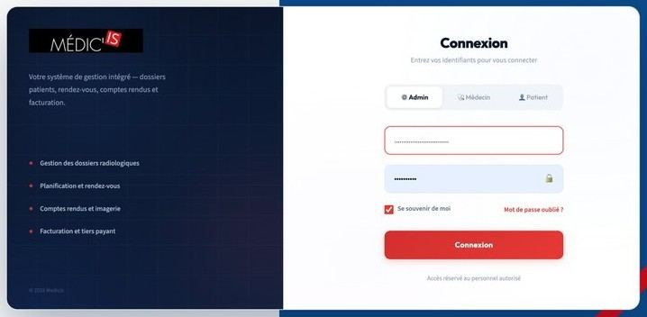

Secteur public
Dématérialisation des procédures, parcours usagers et interopérabilité des systèmes publics sénégalais.
Plateformes pour la santé, la finance et le secteur public.

Africa Blue Interaction (ABI) conçoit, développe et opère des plateformes numériques pour la santé, la finance et le secteur public. Nous partons des usages réels pour livrer des services robustes, conformes et réellement adoptés.
Maîtrise des cadres OHADA, SYSCOHADA, BCEAO et CDP.
Expertise UX/CX et data pour des services adoptés et mesurés.
Spring Boot, Angular, PostgreSQL, Keycloak et Docker : un socle éprouvé, sans dépendance propriétaire.
Une équipe basée à Dakar, au plus près des usagers et des institutions.
Dématérialisation des procédures, parcours usagers et interopérabilité des systèmes publics sénégalais.
Gestion des cabinets et centres d'imagerie, dossiers patients, hébergement de données de santé.
Gestion fournisseurs, circuits de validation, facture électronique et paiement.
Recherche utilisateur, design de services, tableaux de bord et optimisation par la donnée.
La gestion des cabinets de radiologie, de l'accueil du patient à la facturation. Dossier patient unique, rendez-vous, workflow d'examen, comptes rendus, imagerie DICOM et facturation.
Demander une démo Medicis →La plateforme de gestion fournisseurs et de facturation électronique pour l'Afrique de l'Ouest : contrats, ordres de paiement et factures dans un même espace, du premier engagement jusqu'au règlement.
Accéder à fayma.app →Le système d'information des cabinets de radiologie, présenté en vidéo : de l'accueil du patient à la facturation.
De la première connexion au paiement de vos factures : le parcours fournisseur sur fayma.app expliqué en vidéo.
Immersion auprès des usagers, cartographie des parcours et des règles métier.
Maquettes et prototypes testés avec les utilisateurs avant toute ligne de code.
Architecture en microservices, livraisons itératives et recette avec le client.
Hébergement, maintenance, support et mesure continue de l'usage.
dossiers patients migrés de MEDISYS vers Medicis, avec un changement complet d'architecture des données et sans aucune perte.
Au Sénégal, sur des serveurs que nous administrons. Pour les données de santé, l'hébergement répond aux exigences applicables et fait l'objet d'un dossier auprès de la CDP.
Oui. Nos applications exposent des interfaces ouvertes et s'appuient sur des standards établis pour dialoguer avec les systèmes déjà en place.
Oui. La migration de 160 000 dossiers patients de MEDISYS vers Medicis a été menée sans perte, avec un changement complet d'architecture.
Une présentation dure moins de trente minutes. Un déploiement pilote se compte en semaines, selon le périmètre et la reprise des données existantes.
Nos équipes, depuis Dakar : maintenance corrective et évolutive, supervision et accompagnement des utilisateurs.
Oui, quand le besoin sort du périmètre de nos plateformes : conception de service, expérience utilisateur, tableaux de bord, intégration au système d'information.
Une démonstration de Medicis ou de Fayma, un projet sur mesure, une question : nous vous répondons sous deux jours ouvrés.